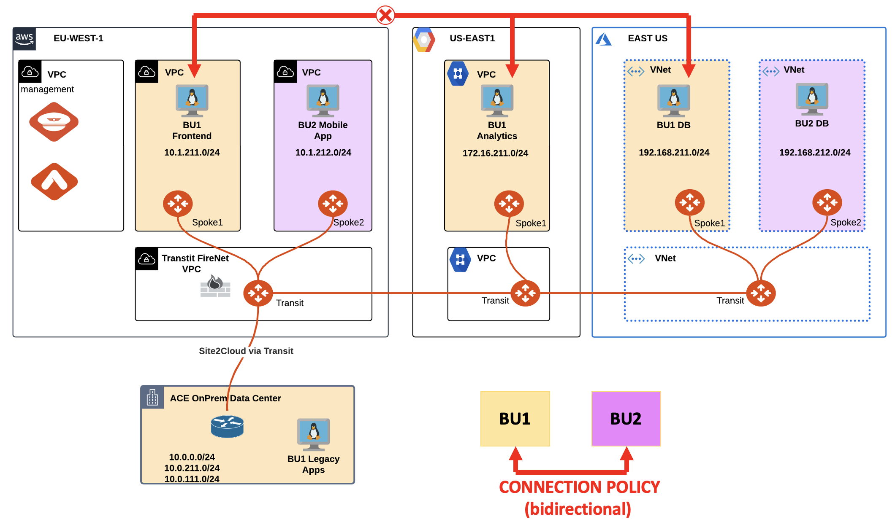
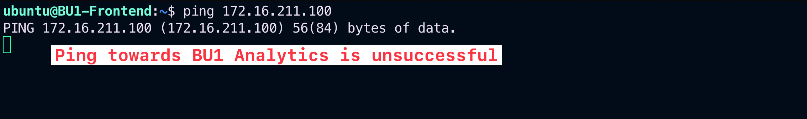
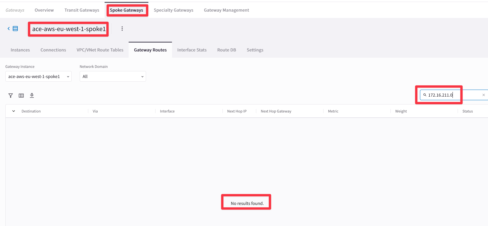
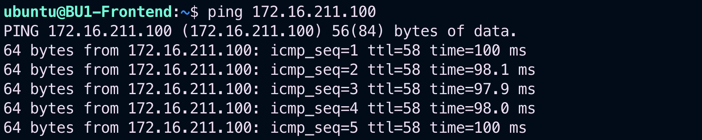
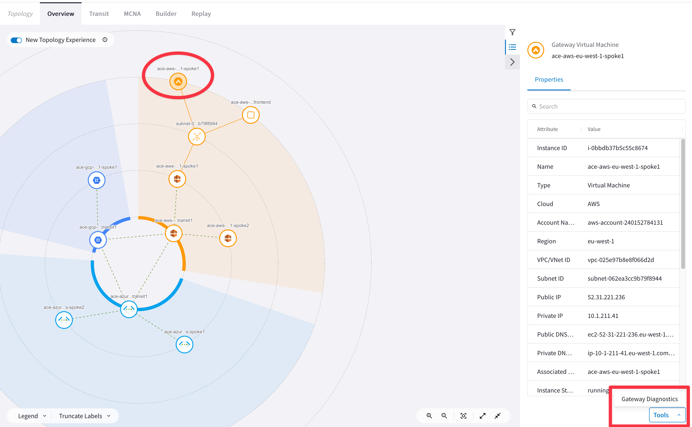
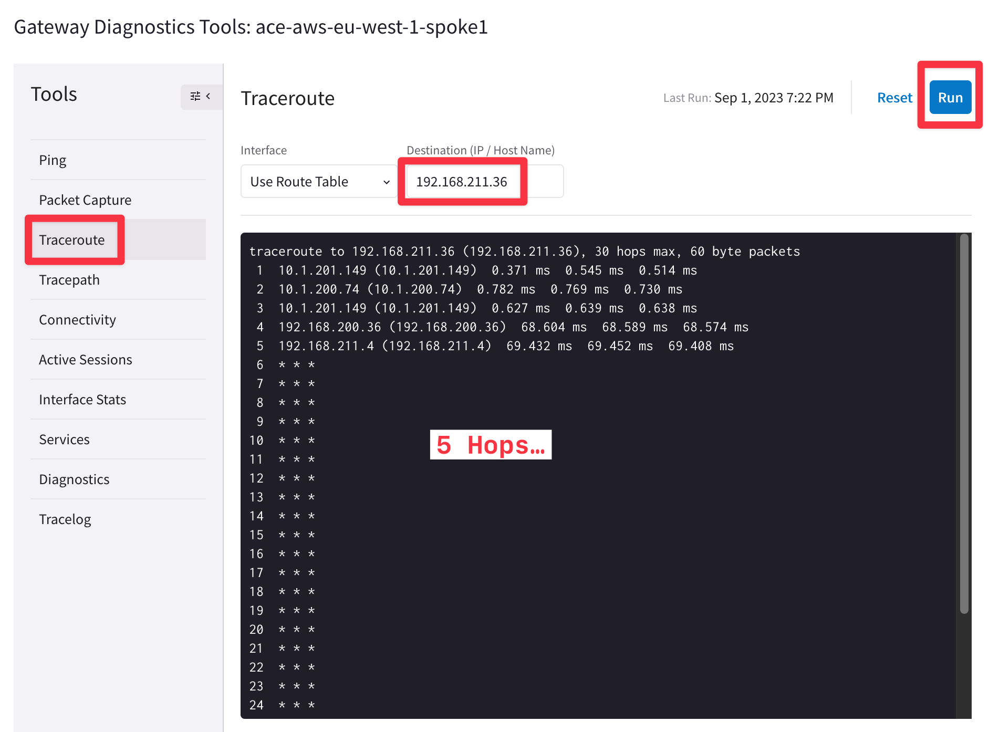
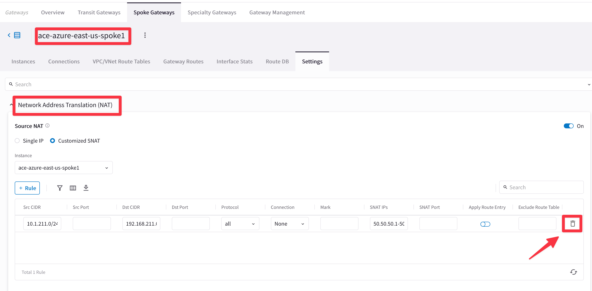

Lab 5 - Routes Manipulation & NAT#
1. SCENARIO#
BU1 is suddenly unable to communicate with both BU1 Analytics and BU1 DB.
The network team discovered a disgruntled employee jeopardized the connectivity between the two workloads.
 Figure 57: Lab 5 Topology
2. TROUBLESHOOT REQUEST#
Verify that the connectivity between BU1 Frontend and BU1 Analytics is actually broken.
SSH to BU1 Frontend and carry out ping/traceroute/ssh commands towards BU1 Analytics.
 Figure 58: Ping fails
Check whether the AWS Spoke1 GW and the GCP Spoke1 GW have the relevant routes or not.
Tip
Go to CoPilot > Cloud Fabric > Gateways > Spoke Gateways > select the Spoke1 Gateway in AWS > Gateway Routes and filter out based on the remote route.
 Figure 59: Filter out
The Spoke1 in AWS does not have the destination route in GCP based on the outcome above…
Check what route is received by the GCP Transit GW from the GCP Spoke1 GW.
Tip
Go to CoPilot > Cloud Fabric > Gateways > Transit Gateways > select the Transit Gateway in GCP > Gateway Routes and filter based on the parameters depicted below.
“Next Hop Gateway contains gcp”
 Figure 60: Next Hop
Figure 60: Next Hop
You will notice that the Spoke1 in GCP is advertising a bogus/malicious route (i.e. 40.40.40.0/24) and the legit route 172.16.211.0/24 has been withdrawn!
Fix the issue checking the Route Manipulation section on the Spoke GW in GCP.
Tip
Go to CoPilot > Cloud Fabric > Gateways > Spoke Gateways > select the Spoke GW in GCP > Settings > Routing and remove the CIDR 40.40.40.0/24 from the Customize Spoke Advertised VPC/VNet CIDRs section and then click on SAVE.
 Figure 61: Customize Spoke Advertised VPC/VNet CIDRs
Figure 61: Customize Spoke Advertised VPC/VNet CIDRs
Relaunch the ping from BU1 Frontend towards BU1 Analytics.
 Figure 62: Ping is ok
Verify that the connectivity between BU1 Frontend and BU1 DB is actually broken.
SSH to BU1 Frontend and carry out ping/traceroute/ssh commands towards BU1 DB.
 Figure 63: Ping is unsuccessful
Figure 63: Ping is unsuccessful
Use Diagnostics tools by clicking on the Spoke1 Gateway in AWS and try to traceroute the instance behind the other spoke.
Tip
Go to CoPilot > Coud Fabric > Topology then select the Spoke1 GW in AWS, click on Tools and click on Gateway Diagnostics.
 Figure 64: Gateway Diagnostics
 Figure 65: Gateway Diagnostics 2
The outcome above shows 5 Hops. Try to figure out why the first and the third Hop have the same IP…
Launch a packet capture on the LAN interface (eth0) of Azure Spoke1 GW and filter out the outcome based on ICMP.
Tip
Open two tabs: on the first tab launch a packet capture on the Azure Spoke GW1 on the LAN interface (etho), and after few seconds, launch a ping from the AWS Spoke GW1 towards BU1 DB’s IP address (VM in Azure).
 Figure 66: Ping to BU1 DB
Figure 66: Ping to BU1 DB
 Figure 67: Packet Capture
Figure 67: Packet Capture
You will only notice ICMP Echo Request packets going out from the LAN interface. Moreover the Source IP is completely different from the expected source IP, that should be part of the cidr 10.1.211.0/24.
Fix the issue checking the Routes Manipulation section on the Spoke GW in GCP.
Tip
Go to CoPilot > Cloud Fabric > Gateways > Spoke Gateways > select the Spoke1 GW in Azure > Settings > NAT, delete the NAT Rule and click on SAVE.
 Figure 68: Deletion of the NAT rule
Relaunch the ping from BU1 Frontend towards BU1 DB.
 Figure 69: Ping is ok
Figure 69: Ping is ok